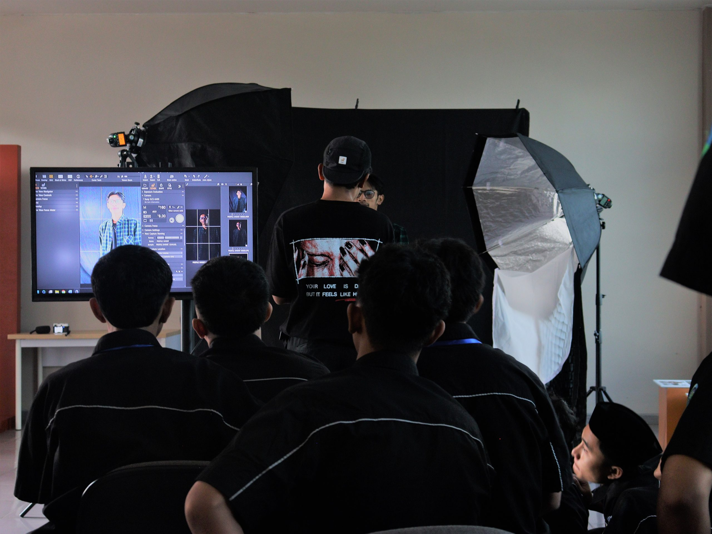
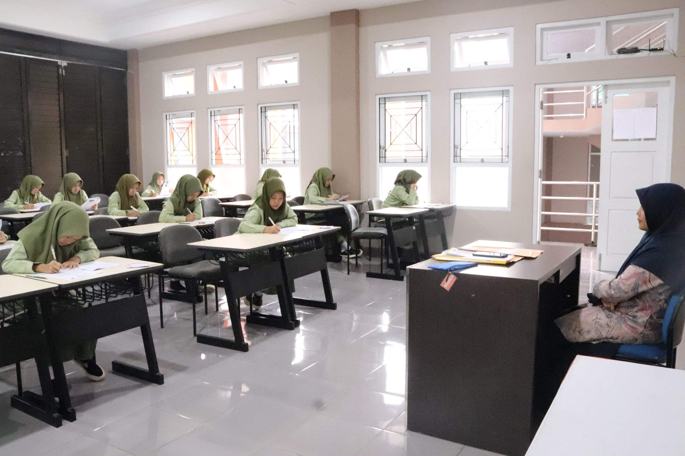
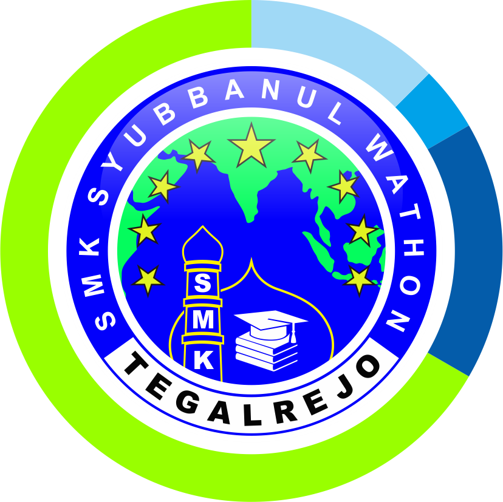
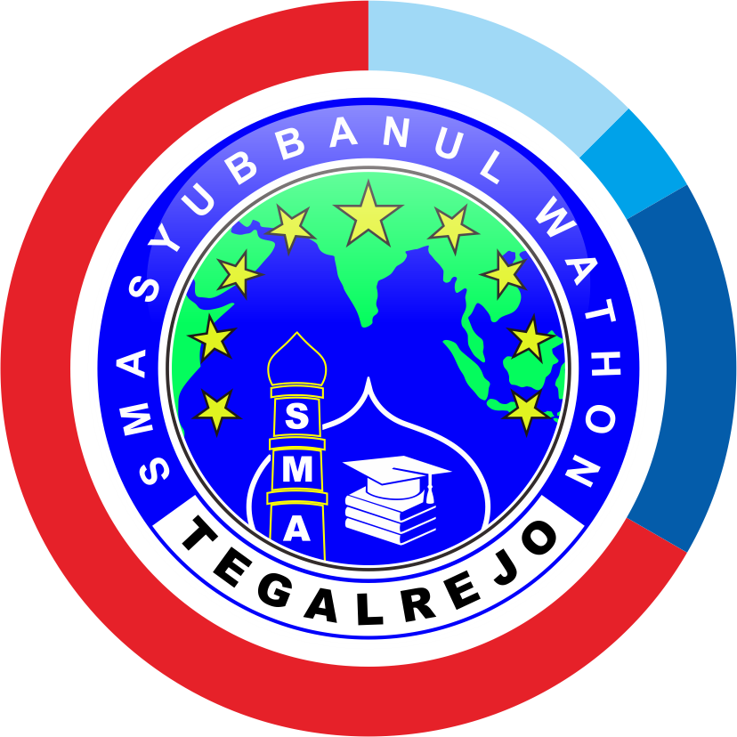
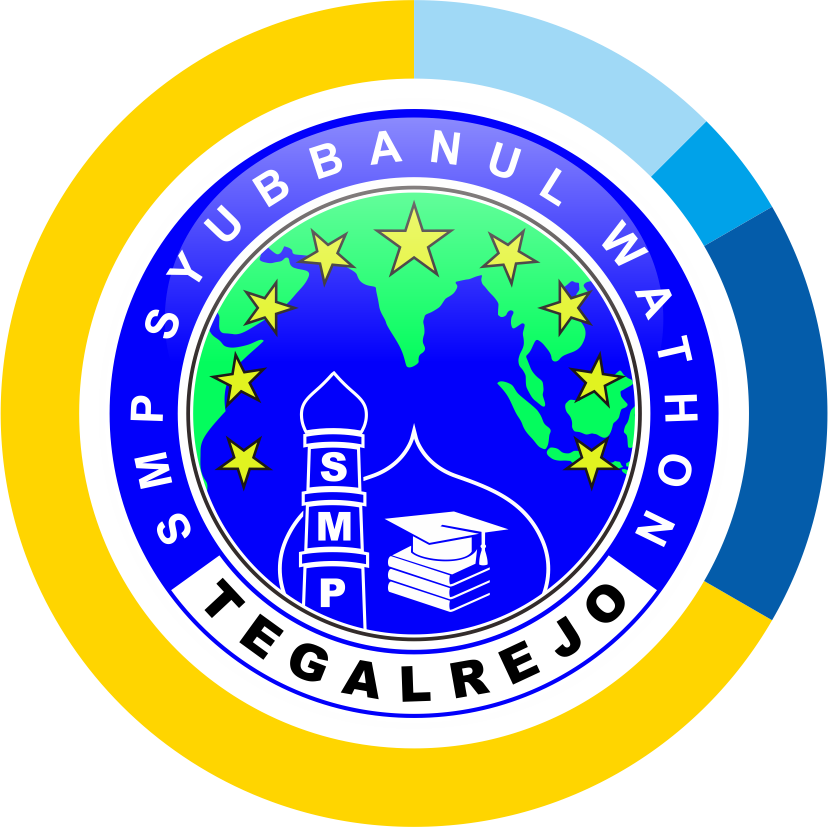
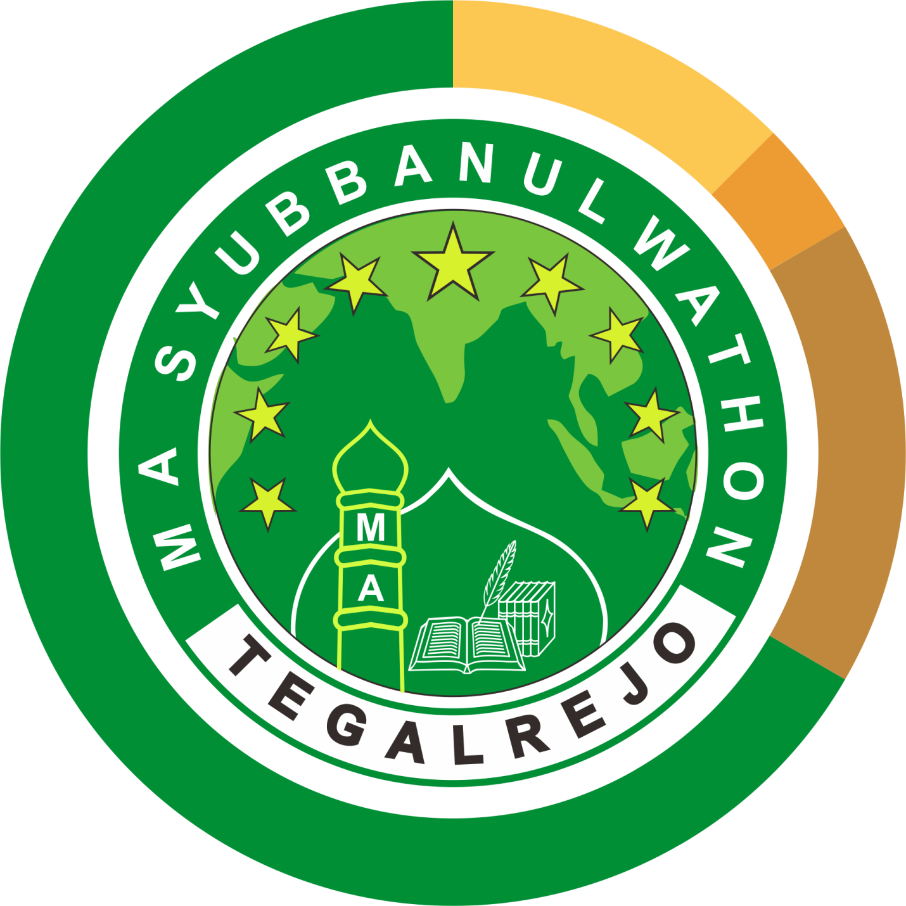
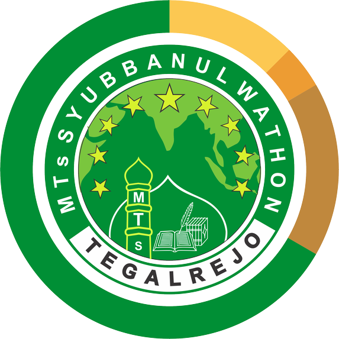

Galeri Pesantren
Dokumentasi Kegiatan Santri
Momen-momen berharga dalam keseharian santri di lingkungan Syubbanul Wathon.




Pondok Pesantren Syubbanul Wathon menyelenggarakan pendidikan terpadu mencakup SMP, MTs, SMA, SMK Kejuruan, dan MA dengan kurikulum pesantren modern.
Menampilkan waktu sholat presisi berdasarkan lokasi Anda
04:15 WIB
11:35 WIB
14:48 WIB
17:42 WIB
18:52 WIB
Pilihan jenjang formal terakreditasi yang memadukan kurikulum nasional dan nilai pesantren.

KEJURAN VOKASIMencetak tenaga ahli siap kerja dengan berbagai jurusan keahlian bernilai tinggi di industri

TINGKAT MENENGAH ATASPersiapan unggul menuju perguruan tinggi negeri & luar negeri dengan peminatan IPA/IPS

TINGKAT MENENGAH PERTAMAFokus pada pembentukan karakter islami, penguasaan sains dasar, serta tahfidz Al-Qur'an jus 30.

TINGKAT MENENGAH ATASKajian ilmu keislaman mendalam (Madrasah Aliyah) bidang Keagamaan, MIPA, dan IPS.

TINGKAT MENENGAH PERTAMAPendidikan keagamaan mendalam, kitab kuning dasar, bahasa Arab & Inggris terpadu.
Momen-momen berharga dalam keseharian santri di lingkungan Syubbanul Wathon.


Sub Judul Jurusan
Deskripsi pelajaran di jurusan ini...